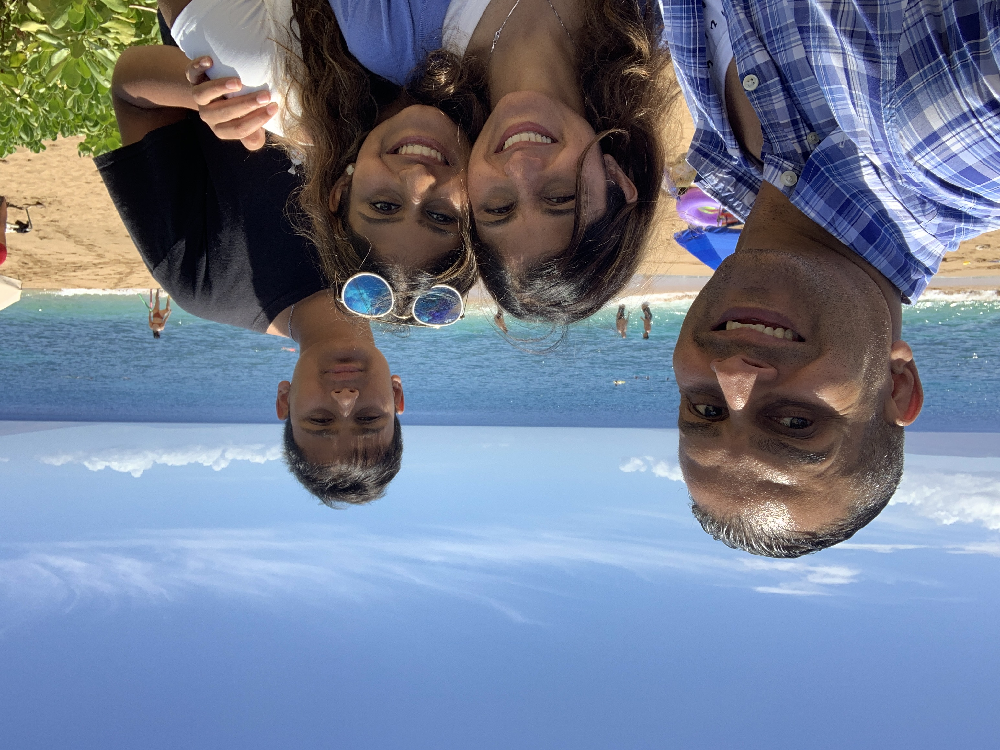
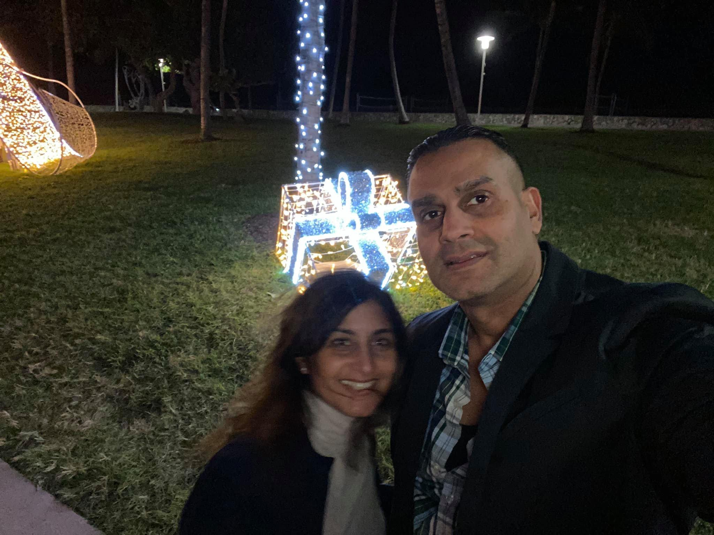

My moms life has been an incredible journey. When I was younger, I joined my mom at work many times and often watched her in meetings. After watching my mom present so often, I felt confident to present. My mom is amazing and has helped to coach me through so many obstacles in my life. There have been times where my mom worked really long hours and traveled but she always made sure to balance her work-life by attending all of my tennis matches, recitals and other events. My mom would always drive us everywhere when we were younger and take us to museums every weekend. She made sure that we learned how to ride a bike, swim, play musical instruments, drive at the right age, ski, roller skate/roller blade, play tennis, basketball, and softball and take art lessons. I don’t think there was anything that my mom did not engage us.


I am extremely grateful for my moms influence and her support throughout the years. If I ever need anything, I can always call my mom to discuss and she would be there to offer a solution or idea to help me feel better, an if she is in a meeting or busy, she would drop everything for us.